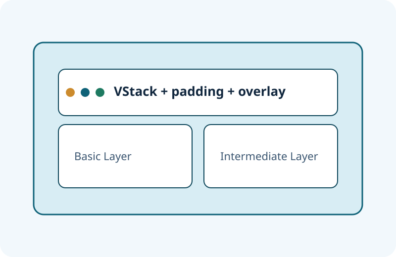

Step 1: 基本表示を理解する
Text・Image・VStackで「表示・配置・整列」の土台を固めます。
これまでの入門サイトを、初心者から中級者へ進むための学習ポータルに再設計しました。 Text・Image・padding・overlay・VStackを起点に、画面構築でつまずかないための実践知識まで整理しています。

Text・Image・VStackで「表示・配置・整列」の土台を固めます。
padding・overlay・frameで余白と重なりの設計を学びます。
Stacks・Spacer/Frame・Buttonを組み合わせ、実装を整理します。
文字表示からフォント設計、複数行制御まで。
Textを学ぶアスペクト比・トリミング・装飾の違いを整理。
Imageを学ぶ余白を設計して、読みやすいUIの密度を作る。
paddingを学ぶ重ね表示とalignmentを使ったラベル/バッジ実装。
overlayを学ぶ縦方向レイアウトの基本と spacing/alignment 設計。
VStackを学ぶStacks、Spacer/Frame、Buttonで再利用しやすい画面設計へ。
追加トピックへ背景にビューを配置し、重ね方と整列を調整する。
詳細を見る指定した形で表示範囲を切り抜き、見た目を整える。
詳細を見る最大幅を使ったレイアウト調整と配置制御を行う。
詳細を見るテキストの表示行数を制限して読みやすさを保つ。
詳細を見るベースビューの前面に別ビューを重ねて情報を追加する。
詳細を見る表示タイミングで非同期処理を開始しデータ取得を行う。
詳細を見るSwiftUIは、Appleプラットフォーム向けの宣言的UIフレームワークです。 初心者にとっては「何を表示したいか」を素直に書ける点が学習しやすく、 中級者にとってはコンポーネント分割や状態管理への接続がしやすい点が強みです。
Q. ベースのビューの上に別ビューを重ねるmodifierはどれですか？
詳細な解説ページへ進む大丈夫です。各ページにBasic/Intermediate切替を用意しているので、Basicだけでも学習できます。
ロードマップの順に、 Text → VStack → padding → overlay → Image → 発展トピック の順を推奨します。